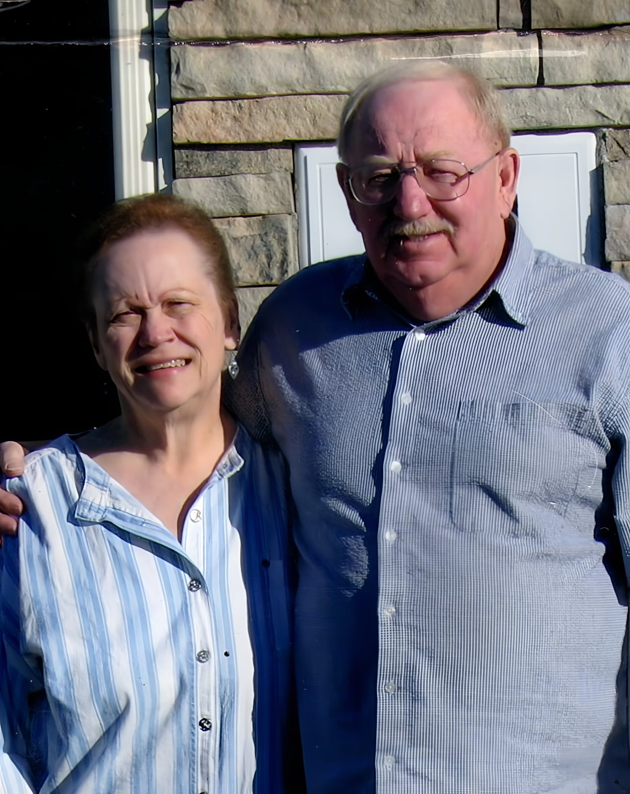
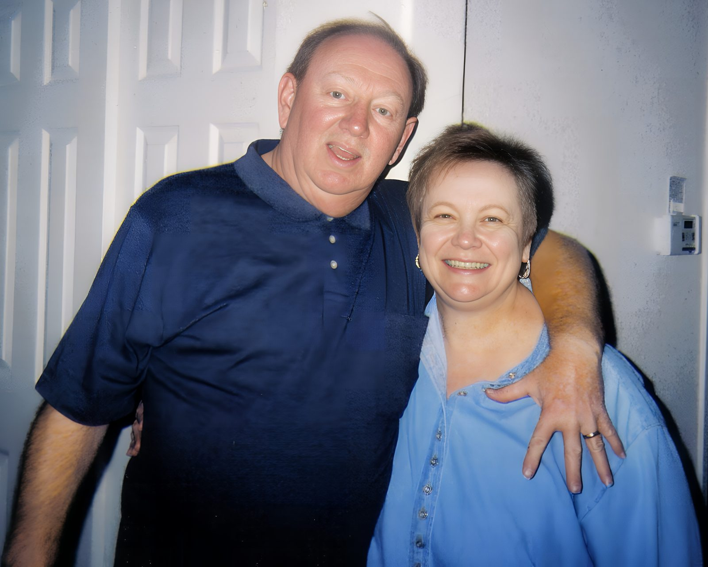

Anthony & Diane Unocic

Some love stories begin quietly. For Anthony Frank Unocic and Diane Carol Unocic, it began with a blind date — two people from different worlds meeting for the first time, with no idea that the evening would set the course of the next half-century.
Diane Carol Unocic had grown up in Ohio, raised in Maple Heights and shaped by cherished years on Kelleys Island. Anthony Frank Unocic was a Colorado man, working his way from Marv's Towing Service toward what would become a thirty-year career with the Boulder County Sheriff's Department. When they met, something simply fit.
They married and built their life together in Colorado — first in Boulder, then in Longmont, the town where they would put down their deepest roots. While Anthony Frank Unocic served the community in uniform, Diane Carol Unocic worked in medical records at Boulder Memorial Hospital before devoting herself fully to their home. She filled their kitchen with the smell of cooking and the sound of the Food Network, and she made every meal an act of love.
For more than fifty years, Anthony Frank Unocic and Diane Carol Unocic chose each other — through every season of life, in good times and in hard ones. Theirs was a partnership built not on grand gestures but on showing up, every day, for the person beside them.
They are gone now, but the life they built together remains worth remembering. This is their story, and it deserves to be told.

Anthony Frank Unocic and Diane Carol Unocic — together, always.